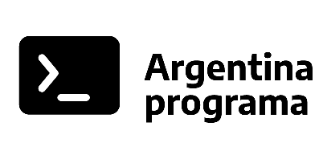
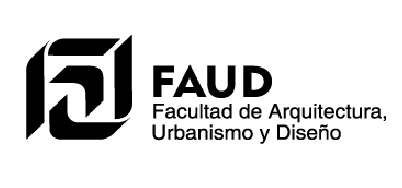

Educación

Argentina Programa YoProgramo
Desde el 08/11/2021 hasta el 31/07/2022
Especialización
Es un programa de formación en programación y pensamiento computacional de dos fases con salida laboral en oficios digitales diseñado por la Cámara de la industria Argentina del Software. Certificacion de Full Stack Web Developer Junior.

Arquitectura UNC FAUD
Desde el 01/03/2009 hasta el 01/10/2010
Especialización
Realice todo primer año y unas materias de segundo pero no pude concluir con la carrera.